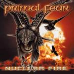

|
|
||
Primal Fear : Nuclear Fire (2001) |
|

http://www.primalfear.de |
1. Angel in Black 3:58 |
7/10 |
|
El tercer disco de Primal Fear, "Nuclear Fire" es un nuevo paso en la andadura de esta banda alemana, liderada por el legendario bajista Mat Sinner y por la poderosa voz del antiguo miembro de Gamma Ray, Ralf Scheepers. Y digo un nuevo paso, pero no un paso adelante. La voz de Ralf está en su mejor momento, y la potencia de este álbum es indiscutible, pero este disco no es mejor que el anterior ("Jaws of Death"). Este es uno de esos trabajos en que ninguna de las partes es mala, pero en los que el conjunto no destaca, y donde pocas canciones llaman realmente la atención. El disco comienza inmejorablemente: "Angel in Black" es una gran canción, donde la portentosa voz de Ralf Scheepers cabalga sobre unos aplastantes riffs de guitarra, y que llega a su mejor momento en el pegadizo estribillo. El impresionante solo tocado a dos guitarras le pone la guinda. "Kiss of Death" no está mal, pero resulta algo lenta, incluso con el doble bombo impulsándola, y le falta una clara resolución, ya que el estribillo suena muy parecido al resto de la canción. En "Back from Hell" el doble bombo si impone su ley, marcando un ritmo realmente vertiginoso. La voz de Scheepers suena realmente extrema, pero el coro del estribillo aporta un sonido algo más melodioso suavizando lo justo el resultado final. El cuarto corte, "Now or Never", es de ritmo más moderado, y algo machacón, lo que resulta en una canción más bien pesada. "Fight the Fire" es una canción de ritmo vivo, riffs de guitarra con un sonido muy thrash metal, coros contundentes, y solos impresionantes. "Eye of an Eagle" es otra de las de ritmo moderado, y de nuevo riffs algo repetitivos. Ralf Scheepers demuestra que puede gritar mucho y muy alto, y el estribillo tampoco está mal, pero en conjunto la canción no es especialmente destacable. La séptima, "Bleed for Me" es una balada, con algunos momentos bastante emotivos, donde Ralf demuestra que puede cantar con sentimiento además de con furia, pero que tampoco es realmente brillante. "Nuclear Fire" si es otra gran canción. Riffs elaborados, marcado doble bombo, la voz demostrando que puede aportar una notable variedad a las canciones, algo que se echa de menos en casi todo el disco, un estribillo potente y pegadizo y solos de guitarra cortantes y a mil por hora. "Red Rain" es otra de las de ritmo rápido, y riffs algo sosos. El estribillo al menos le aporta algo de color. La décima pista, "Iron Fist in a Velvet Glove", que aparece marcada como Bonus Track en mi copia, es otra de mis canciones favoritas del álbum. Ritmo tranquilo, pero con varios cambios, variedad en la voz, y un estribillo a coro superpuesto con la voz solista que es de lo mejor del disco. "Fire on the Horizon" sigue en la línea de las canciones rápidas del álbum, potente pero más bien gris. De nuevo los solos de guitarra se pueden destacar. "Living for Metal" cierra este disco, con un cierto aroma a hevy metal del más clásico. |
||
Rubén Béjar |
||